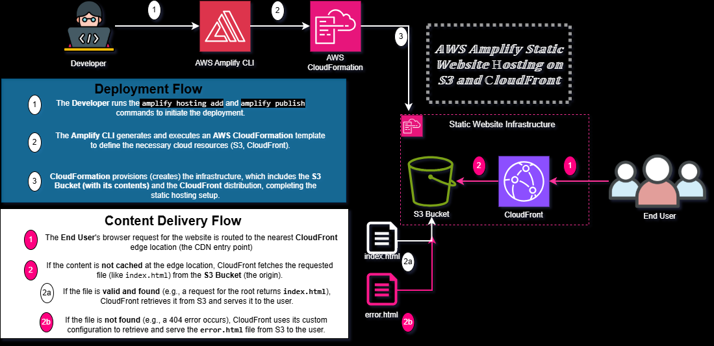

Hi there, welcome to my HTML page
This is a demo to explain how Amplify can be used to simplify the creation of a static website

Architecture Flow Explanation
This architecture illustrates the deployment and delivery of a static website using the AWS Amplify CLI and AWS CloudFormation, leveraging Amazon S3 and Amazon CloudFront for efficient hosting and global content delivery.
Deployment Flow
- Developer Action: The process starts when the Developer executes the
amplify hosting add command, followed by amplify publish, using the AWS Amplify CLI.
- Configuration & Provisioning: The Developer selects the "Amazon CloudFront and S3" option. The Amplify CLI then uses this configuration to generate and execute an AWS CloudFormation template.
- Infrastructure Deployment: AWS CloudFormation deploys the necessary infrastructure, which creates the Static Website Hosting environment, including:
- An Amazon S3 bucket to securely store all the static website content.
- An Amazon CloudFront distribution, which acts as a global Content Delivery Network (CDN).
End-User Access
- Request: An End-User makes a Request to the Website.
- Content Delivery: The request is routed through the high-speed Amazon CloudFront distribution, which serves the cached website files (retrieved from S3 as needed) back to the End-User with low latency.
This automated system ensures the website is provisioned and published with global delivery capabilities via robust AWS infrastructure.